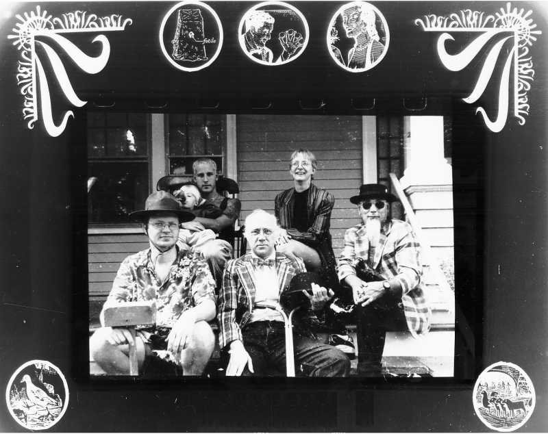

When people ask what sort of music The Panic Band played, our first reply is usually ‘apocabilly music’ and then — when that fails to elicit a response — we fall back and describe it as ‘folky space rock.’
The band itself metamorphosed more than once since its 1991 inception as house band for the Cabaret of the Oddly Normal and Pataphysical Circus at AS220. Since Halloween 1995, the last incarnation wowed fans from the disparate musical camps, whether punk, jazz, folk or experimental, being compared variously to the indispensible Captain Beefheart, the German avant-gods Faust and the original psychedelic madcap Syd Barrett.